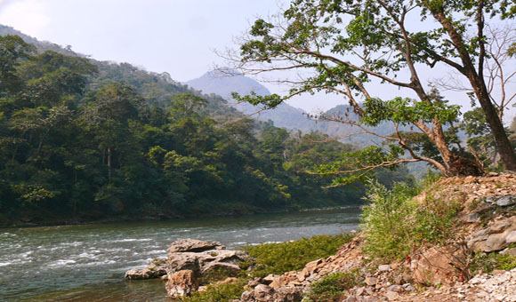

Royal Manas National Park

Manas River
9-13
January 2014

Biswapriya Rahut

Mousumi Dutta

Amit Bandekar

Madhura Niphadkar
Ever since my first stay at the Mathanguri FRH in the Manas N.P., I has been
fantasying a visit to the mist covered hills of the Royal Manas N.P. that by across Manas River deep into
central Bhutan.
Fantasy changed to reality when my good friend and birding companion Amit Bandekar of Goa first
proposed this unique birding adventure which . . . . .